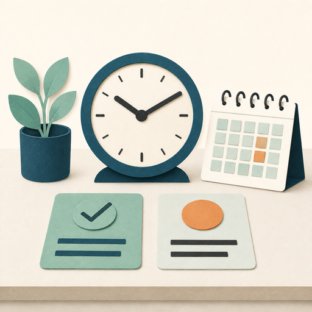
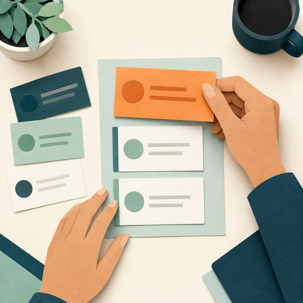

Time Management
The process of planning and exercising conscious control of time spent on specific activities, especially to increase effectiveness, efficiency, and productivity.
Time management and prioritization work together.

The process of planning and exercising conscious control of time spent on specific activities, especially to increase effectiveness, efficiency, and productivity.
A decision-making process that determines the order and focus of your tasks and activities based on their relevance and urgency.
Opening reflection
Pause and consider: What is your greatest challenge when balancing your workload?
Effective time management and prioritization support leaders and teams.
Benefits for leaders and teams
Increased productivity
Better decision-making
Reduced stress
Improved time allocation
Better work-life balance
Clear direction
Enhanced morale
Increased accountability
Improved collaboration
A busy schedule can still give time to low-value work. Prioritization helps you decide what should receive your attention.

Which task deserves your focused attention because it is most relevant or urgent?
Choose the best starting point
Choose one action to apply after this lesson.
Small, consistent changes are more sustainable than redesigning your entire schedule at once.